Több mint 70 éve jelen vagyunk a textiliparban kötöttáru gyártási és termékfejlesztési tevékenységeinkkel.
Vezérigazgatói köszöntő
Nagy megtiszteltetés számomra, hogy a SZEFO Közhasznú Nonprofit Zrt. új vezérigazgatójaként köszönthetem Önöket. Egy olyan vállalat munkáját folytathatom, amely immár több mint hetven éve biztosít méltó munkalehetőséget fogyatékossággal élő és egészségkárosodott emberek számára.
Büszke vagyok arra a befogadó közösségre, amelyet munkatársaink alkotnak, és amelyben a mindennapokban láthatóvá válik az együttműködés, a szakmai tudás és az emberi méltóság tisztelete.
BővebbenVezérigazgatói köszöntő
Tisztelt Munkatársaink, Tisztelt Partnereink!
Nagy megtiszteltetés számomra, hogy a SZEFO Közhasznú Nonprofit Zrt. új vezérigazgatójaként köszönthetem Önöket. Hatalmas felelősséggel és egyben mély elhivatottsággal fogadom el ezt a megbízatást, hiszen egy olyan vállalat munkáját folytathatom, amelynek immár több mint hetven éve legfontosabb feladata a megváltozott munkaképességű, fogyatékossággal élő és egészségkárosodott emberek foglalkoztatásának, foglalkozási rehabilitációjának és méltányos munkakörülményeinek biztosítása.
Amikor 1953-ban 27 látássérült ember megalapította az egykori Szegedi Fonalmentő Vállalatot, egy közös küldetéssel tették: értékteremtő munkát biztosítani azoknak, akik számára fogyatékosságuk, betegségük miatt a munkaerőpiac kevés esélyt kínált. Ez a küldetés ma is ugyanolyan fontos, mint évtizedekkel ezelőtt.
Büszke vagyok arra a befogadó közösségre, amelyet munkatársaink alkotnak, és amelyben a mindennapokban láthatóvá válik az együttműködés, a szakmai tudás és az emberi méltóság tisztelete.
Vezérigazgatóként számomra egyértelmű: a fogyatékossággal élő és megváltozott munkaképességű kollégák iránti elköteleződés, felelősségvállalás és támogatás nem csupán hagyomány, hanem a jövőnk egyik legfontosabb alapja is.
Kiemelt céljaim:
- a társadalmi felelősségvállalás még határozottabb képviselete
- az esélyegyenlőség további erősítése
- a minőség és innováció folyamatos fejlesztése
- a stabilitás és fenntarthatóság megőrzése
Személyes motivációm egyszerű, mégis mélyről fakadó: olyan munkahelyet, munkakörülményeket és jövőképet kívánok biztosítani, ahol minden kolléga megtalálhatja a helyét, szakmai tudását, képességeit kibontakoztathatja, és érezheti, hogy munkája valódi értéket teremt.
Ezúton szeretném megköszönni munkatársainknak az eddigi elhivatott munkát, partnereinknek pedig a hosszú évek során tanúsított bizalmat és együttműködést. A jövőben is számítok arra, hogy közösen, egymást támogatva folytatjuk munkánkat.
Inspiráljon bennünket az elmúlt 70 év összefogása és kitartása – és építsünk tovább egy olyan vállalatot, amely példát mutat emberségből, szakmaiságból és felelősségvállalásból.
Mérész Attila
vezérigazgató
ISO Tanúsítványaink
Rólunk
Magyarország egyik legrégebbi rehabilitációs foglalkoztatója, több mint 500 munkatárssal.
A SZEFO Közhasznú Nonprofit Zrt. Magyarország egyik legrégebbi rehabilitációs foglalkoztatója: 1953 óta több ezer fogyatékossággal élő és egészségkárosodott embert segített munkához, jelenleg mintegy 500 megváltozott munkaképességű munkatársat foglalkoztat.
A textilipar, divat- és kötöttáru gyártás területén nyújtunk teljes körű szolgáltatást.
Fióktelepeinken villamosipari bérmunkagyártásban elektromos áramelosztók és szabályozók összeszerelésével is foglalkozunk.
Bővebben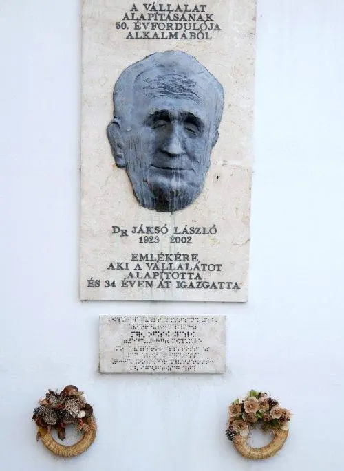
Főbb adatok
35 éve végzünk villamosipari tevékenységet, elektromos áramelosztók és szabályozók összeszerelésével.
A munkavállalói létszám jelentős részét megváltozott munkaképességű munkatársak alkotják.
0
év folyamatos működés
0
kötöttáru / év
0
elektromos berendezés / év
0
kötöttáru / nap
Hiszünk a befogadó munkahelyben — csapatunk jelentős részét megváltozott munkaképességű kollégák alkotják.
Tevékenységeink
Textilipari gyártás
Kötöttáru gyártás, termékfejlesztés és prémium kivitelezés hazai és nemzetközi partnerek számára.
Villamosipari bérmunka
Elektromos áramelosztók és szabályozók összeszerelése, stabil gyártási háttérrel.
Rehabilitációs foglalkoztatás
Méltó, támogató és értékteremtő munkakörnyezet megváltozott munkaképességű munkatársainknak.
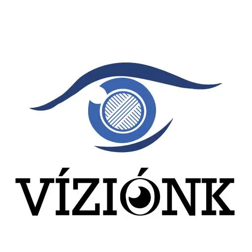
Víziónk
1953 óta küldetésünk, hogy valódi értéket teremtsünk: méltó munkalehetőséget biztosítunk megváltozott munkaképességű embereknek, és támogatjuk őket abban, hogy aktív, megbecsült tagjai legyenek a társadalomnak.
BővebbenTevékenységek & üzletágak

Divat- és kötöttáru gyártás
Kötöttáru- és divatipari gyártás teljes gyártási háttérrel, prémium minőségben.
Divat- és kötöttáru gyártás
Fő tevékenységünk
A Társaság fő tevékenységében kötöttáru gyártására specializálódott. Technológiai fázisok szerint jelentős gépparkkal rendelkezünk. Jövőbeni célunk a piacbővítés és a termékspektrum szélesítése.
Teljes gyártási folyamat házon belül
Az alapanyag beérkezését követően a mintázástól a készáru kiszállításáig minden gyártási fázis házon belül történik: kötés, félkészáru-vasalás, szabás, konfekcionálás, hímzés, filmnyomás, készáru-vasalás, minőségellenőrzés és csomagolás.
Prémium textilruházati gyártás
Minőségi textilek és természetes fonalalapanyagok felhasználásával prémiumkategóriás textilruházati és divat kötöttárut gyártunk. A gyártás során modern technológiai és informatikai megoldásokat, valamint textil- és ruhaipari anyagtudományi eredményeket alkalmazunk.
Nemzetközi prémium partnerkapcsolat
Legfontosabb stratégiai piaci partnerünk az olaszországi DAMA S.p.A., a Paul&Shark prémiumkategóriás márka tulajdonosa és gyártója. A 2001 óta fennálló együttműködés során a Társaság több millió Paul&Shark modellt gyártott.
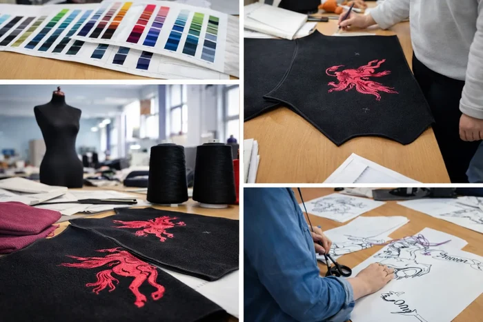
Hazai design - divat
Hazai divattervezői együttműködések, mintakollekciók és prémium kötött divattermékek gyártása.
Hazai design - divat
Évek óta együttműködünk hazai vezető divattervezőkkel a termékfejlesztéstől a mintázáson át a kollekciók gyártásáig.
Hazai divattervezői együttműködések
Évek óta együttműködünk hazai vezető divattervezőkkel a termékfejlesztéstől a mintázáson át a kollekciók gyártásáig.
Ismert márkák és tervezői kollekciók
Az ÁERON, Katti Zoób, ABODI, Tomcsányi, Nanushka és Lilla Pápai (Wyhoys) márkanevek, illetve divattervezők kollekciói közül több kötött darab is készült már kötödénkben.
Stratégiai partnerek
Fontos stratégiai partnereink közé tartozik a Nanushka Zrt., az ÁERON és az ABODI.
Saját márkás kötöttáru
Magas minőségű, saját fejlesztésű Chance márkás divat kötöttáru termékekkel is jelen vagyunk a piac igényes szegmenseiben.
Rugalmas gyártás és mintakollekciók
Vállaljuk kis- és közepes szériás, differenciált vevői igényeket kielégítő, korszerű technológiai gyártmányösszetételű és rövid gyártási idejű divat kötöttáruk és textilruházati felső divatáruk készítését.
Tevékenységünk kiterjed a mintakollekciók fejlesztésére és gyártására, a szériázásra, a konfekcionálásra, a minőségellenőrzésre, valamint a csomagolásra és szállításra is.
Belföldi értékesítési jelenlét
A Társaság regionális, három megyés működési területen van jelen: a szegedi székhely és központi telephely mellett további tizenegy fiókteleppel és két márkabolttal rendelkezik, ahol a Chance saját márkás divat kötöttáruk belföldi értékesítése zajlik.
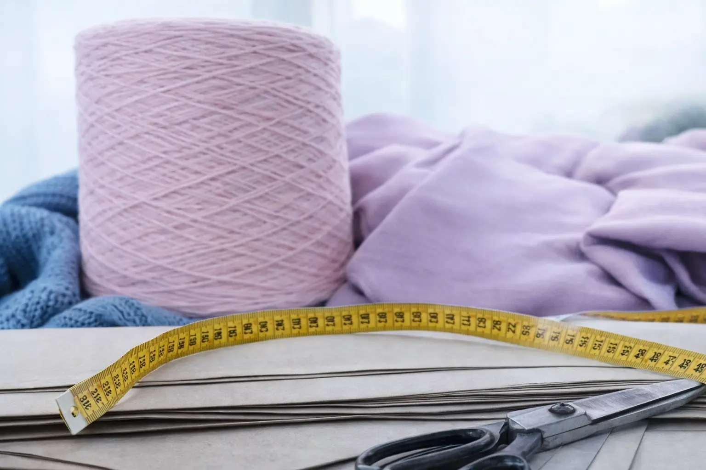
Termékfejlesztés
Korszerű CAD/CAM támogatású termékfejlesztés a mintázástól a gyártás-előkészítésig.
Termékfejlesztés
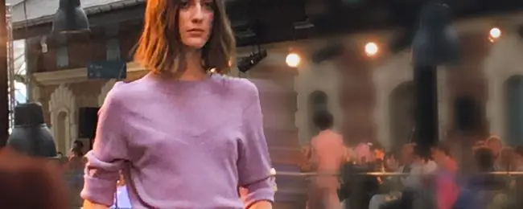
Rugalmas és minőségi vevőkiszolgálás
Számunkra kiemelten fontos, hogy megrendelőinkkel, üzleti partnereinkkel kölcsönösen előnyös kapcsolatot alakítsunk ki, és termékeink minőségi színvonalát a vevő által igényelt szinten teljesítsük.
A korszerű infokommunikációs eszközökön, szoftvereken, a termelés- és vállalatirányítási, valamint CAD/CAM rendszereken alapuló gyártás és az online üzleti kapcsolattartás lehetővé teszi a gyors, rugalmas és költséghatékony vevőkiszolgálást.
Gyors kommunikáció a tervezőkkel
A tervezőinkkel kialakított bizalmon alapuló kapcsolat gyors és hatékony kommunikációt eredményez, melynek köszönhetően a tervezési és gyártási idő is nagymértékben felgyorsul.
Tapasztalt termékfejlesztői háttér
A tervezők e-mailen elküldött fotója vagy rajza alapján történő cikk vagy egész kollekció kivitelezésekor termékfejlesztő és kötödei mintázó munkatársaink már a termékfejlesztésbe bekapcsolódnak a kötöttáru-gyártás területén szerzett több évtizedes tapasztalatukkal, szaktudásukkal és kötéstechnológiai javaslataikkal.
A mintázástól a szériázásig
Így gyakran a termékfejlesztő csapatunk intenzív közreműködésével és erős szakmai hátterének köszönhetően születik meg egy új kreáció: a kötés bemintázástól kezdve a mintavarráson át a szériázásig és sablonkészítésig megtervezzük és előkészítjük a gyártást.
A folyamat eredményeként elkészülhet a kézzel fogható, hordható ruházati termék, vagy akár a kifutóra kerülhet a divattervező által megálmodott és általunk megvalósított ruhakollekció.
Divatbemutatók és mintakollekciók
A 2019. november 4. és 10. között megrendezett Budapest Central European Fashion Week rendezvényen bemutatott ÁERON ruhadarabot a SZEFO Közhasznú Nonprofit Zrt. munkatársai készítették.
Hazai divattervezők megrendelésére gyakran készítünk mintakollekciókat.
Digitális tervezési háttér
Digitális kelme- és mintatervező, rajzoló programokkal kötésmintázat-tervezést végzünk, valamint korszerű CAD/CAM szabásminta-szerkesztő program alkalmazásával komplett ruházati gyártást tervezünk.
Ez magában foglalja a szabásminta-készítést, a szériázást, a terítékrajz-készítést, valamint a szerkesztési, modellezési és szériázási műveletek szakszerű előkészítését.
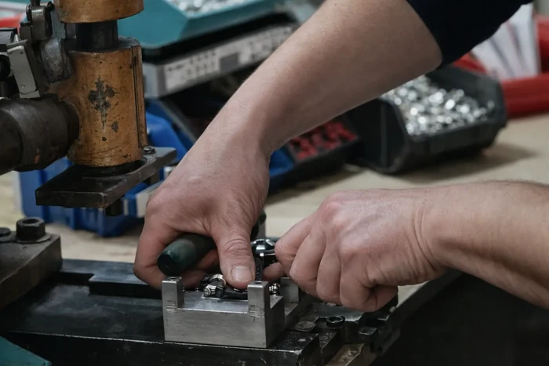
Ipari bérmunka
Több évtizedes együttműködés áramelosztó-szabályozó készülékek összeszerelésében és gyártásában.
Ipari bérmunka
Legrand
A Társaság másik fő tevékenysége – egyben a foglalkozási rehabilitációs tevékenységgyakorlás termelési bázisa – áramelosztó-szabályozó készülékek összeszerelése, gyártása, közvetett export értékesítése.
Az együttműködés kezdete
1990-ben kezdődött a Szentesi Kontakta Villamosszerelési Vállalat (Kontavil) és a Szegedi Fonalfeldolgozó Vállalat közötti együttműködés.
1992-ben a szentesi gyár részvénytársasággá alakult, majd csatlakozott a Legrand csoporthoz.
Stratégiai piaci partnerség
A Legrand Zrt. több mint 30 éve a SZEFO Közhasznú Nonprofit Zrt. foglalkozási rehabilitációs tevékenységének legfontosabb stratégiai piaci partnere.
Az eredményes együttműködésnek köszönhetően a Társaság mintegy 600 munkavállalója által gyártott 30 millió db/év „Legrand” márkájú áramelosztó-szabályozó készülékeket kb. hetven országba exportálják.
Technológiai fejlődés
A világpiaci kihívással, a folytonos technológiai haladással lépést tartva a műszaki-technikai fejlesztéseknek köszönhetően a múltbeli kézi szerelést mára fokozatosan felváltotta a gépi összeszerelés.
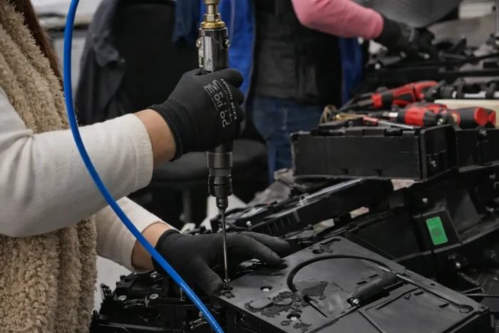
E-hulladék - MOHU
Elektronikai hulladékok kézi bontása, válogatása és előkezelése felelős hulladékgazdálkodási rendszerben.
E-hulladék - MOHU
Hulladékgazdálkodási tevékenység
A SZEFO Közhasznú Nonprofit Zrt. hulladékgazdálkodási tevékenysége veszélyes és nem veszélyes hulladékok gyűjtésére (telephelyi) és előkezelésére terjed ki.
Elektronikai hulladékok kézi bontása
Társaságunk különféle, elsősorban elektronikai hulladékok (16-os főcsoport, 200135*, 200136) kézi bontását, válogatását végzi a hódmezővásárhelyi telephelyen.
Az elektronikai hulladékok köre többek között számítástechnikai eszközökre terjed ki, például laptopra, monitorra, billentyűzetre, egérre és asztali számítógépre.
19-es főcsoportba tartozó hulladékok
A 19-es főcsoportba tartozó hulladékok gyűjtésre vagy előkezelésre kerülnek attól függően, hogy pontosan milyen hulladékokról van szó.
Ebbe a csoportba olyan hulladékok tartoznak, amelyek már átestek valamilyen előkezelési műveleten, tehát más hulladékkezelő létesítménytől átvett hulladékokról van szó.
Fémek esetében gyűjtés, míg elektronikai hulladékok esetén bontás és további válogatás a cél.
Kezelési technológia
A kezelési technológia célja az összetett, többféle anyagot tartalmazó elektronikai hulladékok hasznosítható összetevőinek kinyerése, valamint a nem hasznosítható anyagok elkülönítése.
- R12 – Átalakítás az R1-R11 műveletek valamelyikének elvégzése érdekében
- E02 – 05 válogatás alaki jellemzők szerint (osztályozás)
- E02 – 06 válogatás anyagminőség szerint (osztályozás)
- E02 – 08 hulladékká vált elektromos, elektronikus berendezés bontása
Üzemegységek
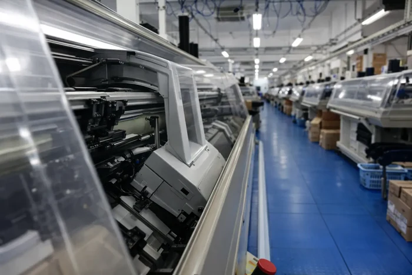
Sík- és körkötő üzem
Számítógép-vezérelt sík- és körkötőgépekkel működő, modern digitális textilipari üzemegység.
Sík- és körkötő üzem
Modern digitális textilipari technológia
Számítógép-vezérelt sík- és körkötőgépeinkkel modern, digitális textilipari technológiára építünk. A technológiai háttér segíti a kapacitás rugalmas bővítését, a gyártási tervekhez való gyors alkalmazkodást, és egységes minőségű gyártást tesz lehetővé – kis és nagy szériában is.
Kötőgépparkunk
Kiterjedt gépparkunk az alábbi géptípusokból áll:
- Shima Seiki síkkötőgépek 5-ös, 7-es, 8-as, 12-es és 14-es gépfinomsággal
- MEC-MOR körkötőgépek 12-es gépfinomsággal
Egyedi mintázás és különleges kötések
Kötödei mintázóprogramjaink és tapasztalt mintázóink lehetővé teszik, hogy egyedi, akár komplex igényeket is pontosan megvalósítsunk.
Gépparkunk alkalmas az alábbi kötések készítésére:
- jacquard
- intarzia
- idomozott kötések
- terepmintás kivitel
- leopárdmintás kivitel
Idomozott modellek, igényes megjelenés
Idomozott termékeink esztétikus, elegáns megjelenéssel készülnek, magas minőségi színvonalon, a megrendelői elvárásokhoz igazítva.
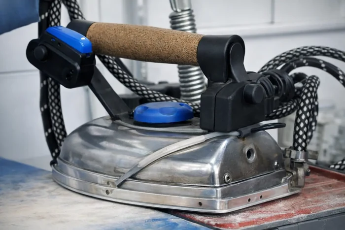
Félkész- és készáruvasaló üzem
Kikészítési, elővasalási és készáruvasalási folyamatok a méretpontos, esztétikus késztermékért.
Félkész- és készáruvasaló üzem
Kikészítési és elővasalási folyamat
A kötött lapok, idomlapok és idomozott alkatrészek a termékfejlesztés során rögzített műszaki leírás alapján kikészítési és elővasalási folyamaton mennek át.
A gőzölés segít abban, hogy a kelme elérje a technológiai előírások szerinti szerkezetet, és felvegye a kívánt méretet és formát.
Elővasalás és hőrögzítés
Az előkészített kötött lapokat asztali vasalóprésen fixáljuk, a műszaki dokumentáció szerint, hőrögzítéssel.
Ez támogatja a méretpontosságot és az egységes minőséget.
Készáruvasalás: végső formázás és simítás
A kész ruhadarabok befejező vasalása a készáruvasaló üzemegységben történik, ahol elvégezzük a végső formázást és simítást.
A készre vasalás két módon történhet:
- Karos készáru-vasalógépeken: a ruhadarabot feszített állapotban, méretre rögzítve vasaljuk.
- Asztali gőzölés + kézi utóigazítás: egyes modelleknél előkészítésként gőzölünk, majd kézi vasalással pontosítunk a kritikus részeken, például gallérnál, ujjvégeknél, patenteknél és szövetbetéteknél.
Eredmény: esztétikus, méretpontos késztermék
A gondosan felépített folyamat biztosítja, hogy a késztermékek szép megjelenéssel, pontos mérettel és magas minőségi színvonalon kerüljenek átadásra.
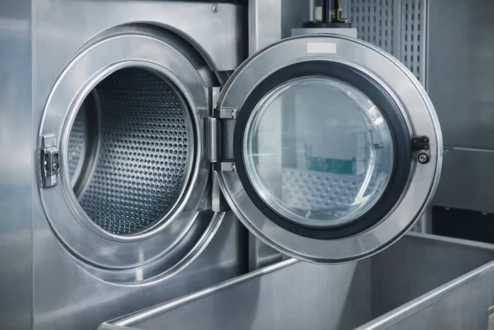
Mosó-kikészítő és fércelő üzem
Mosási, kikészítési és fércelési folyamatok a további gyártási lépések előkészítéséhez.
Mosó-kikészítő és fércelő üzem
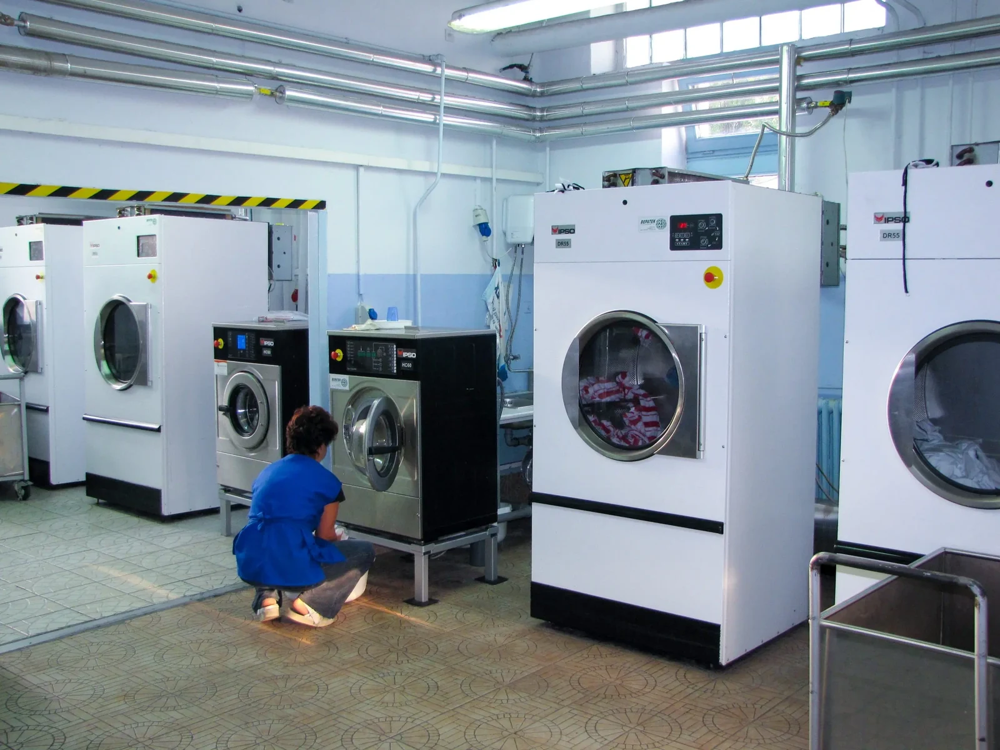
Mosási és kikészítési előkészítés
A kötőgépekről lekerülő kötött lapokat az igényekhez igazodva különböző mosási és kikészítési eljárásokkal készítjük elő a további gyártási lépésekhez.
Fércelés: az előkészítés első lépése
A feldolgozás a fércelő üzemben indul. Itt a darabokat hátulvarró géppel elszegjük, majd a termékek a mosodába kerülnek további kikészítésre.
Mosás és kikészítés: egységes minőség, stabil kelme
A mosási és kikészítési folyamatok minden esetben előre rögzített műszaki leírás alapján történnek.
Korszerű IPSO mosó-, kikészítő-, szárító- és vegytisztító berendezéseink támogatják az egyenletes minőséget, a kelmeszerkezet stabilitását és az elvárt esztétikai megjelenést.
Használt berendezések
- IPSO HF 234
- IPSO MC 60
- IPSO DR 55
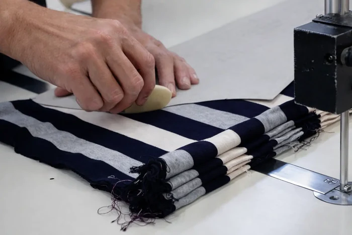
Szabászat
Digitális és manuális szabásminták alapján végzett pontos, anyagtakarékos szabászati előkészítés.
Szabászat
Digitális és manuális szabásminták
A ruházati termékek alkatrészeit digitális vagy manuális szabásminták alapján alakítjuk ki.
A szabáshoz digitálisan tervezett felfektetési és terítékrajzokat használunk, így a folyamat átlátható és pontos.
Pontos méret, anyagtakarékos kivitelezés
A szabás korszerű gépi és kézi szabászgépekkel történik.
Ennek köszönhetően biztosítható:
- a méretpontosság
- az anyaghatékony felhasználás
- az egységes minőség
Stabil alap a további gyártáshoz
A gondosan előkészített szabás a varrás és konfekcionálás megbízható kiindulópontja.
Ez támogatja a hatékony gyártást és a magas minőségű késztermékek előállítását.
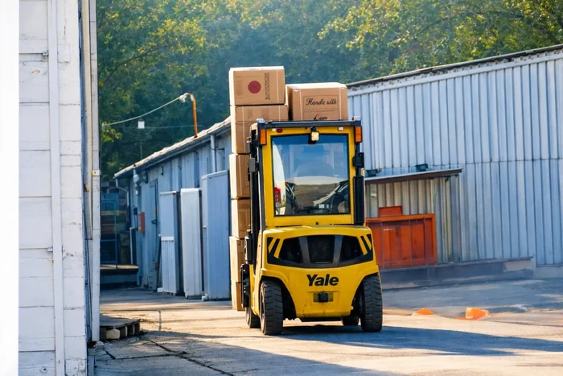
Logisztika
Belföldi és nemzetközi áruszállítás stratégiailag kedvező szegedi logisztikai elhelyezkedéssel.
Logisztika
Stratégiai logisztikai elhelyezkedés
Székhelyünk Szegeden található, Magyarország déli részén, stratégiailag kedvező logisztikai elhelyezkedéssel, a szerb és román határ közelében.
Elhelyezkedésünk ideális alapot biztosít a belföldi és nemzetközi áruszállításhoz egyaránt.
Gyors elérhetőség
Budapest gyorsan elérhető a korszerű autópálya-hálózatnak köszönhetően, így Európa számos célpontja hatékonyan kiszolgálható közúton vagy légi úton.
Nemzetközi kiszállítás
Külföldi partnereinkhez a készárut jellemzően kamionos, közúti szállítással juttatjuk el.
Sürgős esetben légi szállítást is biztosítunk a gyors és rugalmas teljesítés érdekében.
Belföldi logisztika
Belföldön saját és bérelt járművekkel végezzük a szállítást.
A be- és kiszállítások heti rendszerességgel, előre tervezetten történnek, így ügyfeleink pontos, megbízható teljesítést kapnak.
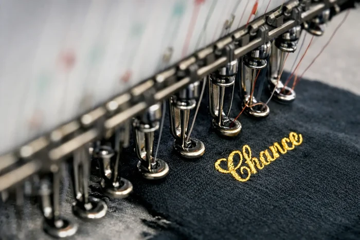
Hímző- és szitanyomó üzem
Hímzés és szitanyomás házon belül, egyedi megjelenéshez és tartós textilnyomatokhoz.
Hímző- és szitanyomó üzem
Hímzés: precíz logózás és egyedi megjelenés
Hímzőüzemünkben 4 db nagy kapacitású, számítógép-vezérelt, 8 fejes hímzőgéppel dolgozunk.
Gép- és szoftverparkunkat folyamatosan fejlesztjük, hogy partnereinknek stabil, egységes és magas minőségű kivitelezést biztosítsunk.
Hímzési lehetőségek
Tapasztalt csapatunkkal és korszerű hímző szoftvereinkkel készítünk:
- egyedi tervezésű hímzéseket
- szériagyártásra alkalmas hímzéseket
- logóhímzést kis és nagy darabszámban
Felhasználási területek
Hímzést vállalunk többek között:
- pólókra
- kötött felsőruházatra
- kabátokra
- munkaruházatra és egyéb késztermékekre
Szitanyomás: tartós, egységes nyomat nagy tételben is
Szitanyomó üzemegységünkben pólók, pulóverek, munkaruhák és egyéb textiltermékek házon belüli szitanyomását végezzük.
Modern textilnyomó gépeinkkel nagy darabszámban is kiváló minőségű, egységes nyomatokat készítünk.
Direkt és transzfer szitanyomás
A gyártás során direkt és transzfer szitanyomási technológiákat alkalmazunk. A klasszikus megoldások mellett különleges, egyedi hatású nyomatok kivitelezésére is van lehetőség.
Tartós és komfortos viselet
A felhasznált festékek és alapanyagok garantálják a tartós, kopásálló és esztétikus nyomatokat.
Nyomataink vékony festékréteggel készülnek, így a kész ruhadarabok könnyű, komfortos viseletet biztosítanak.
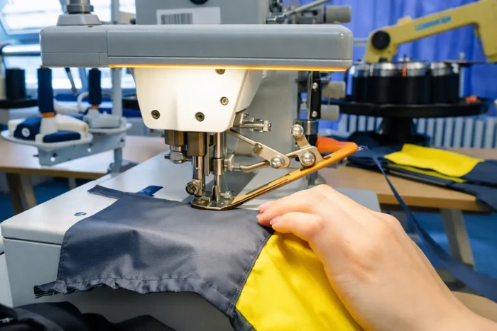
Varróüzem
Konfekcionálási és befejező műveletek korszerű ipari varrógépekkel és felkészült varrodai csapattal.
Varróüzem
Konfekcionálási műveletek
A kötőgépről lekerülő idomozott vagy kiszabott darabok konfekcionálási, befejező műveleteket igényelnek.
Ezt a folyamatot korszerű, nagyüzemi technológiával és felkészült varrodai csapattal végezzük.
Modern géppark, megbízható minőség
Varróüzemünkben többfunkciós, energiatakarékos ipari varrógépek, valamint elektronikusan programozható gomblyukvarrógépek segítik a pontos és egységes kivitelezést.
Az egyes műveleteket speciális varrógépekkel végezzük, a termék igényeihez igazítva.
Széles gépválaszték nagyobb kapacitáshoz
Gépparkunkban az alapgépek mellett elérhető többek között:
- kettli
- interlock
- fedőző
- hátulvarró
- dísztűző
- gombozó
- gomblyukazó
Gyorsabb gyártás, rugalmas kiszolgálás
A varrodában is folyamatosan törekszünk az automatizálásra, ami segíti a gyártás gyorsítását, és lehetővé teszi a nagyobb megrendelői igények hatékony kiszolgálását.
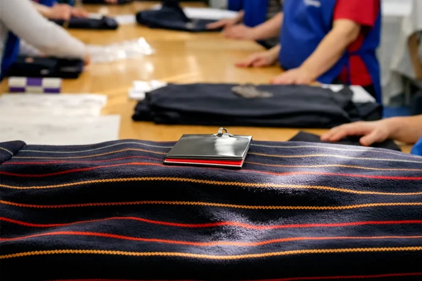
Minőségellenőrzési Osztály (MEO)
Többlépcsős késztermék-ellenőrzés, címkevizsgálat, csomagolás és kiszállítási előkészítés.
Minőségellenőrzési Osztály (MEO)
Többlépcsős késztermék-ellenőrzés
A gyártás végén minden készterméket többlépcsős ellenőrzésnek vetünk alá a műszaki dokumentáció alapján.
Így biztosítjuk, hogy a kiszállított áru méretben, jelölésekben és minőségben is megfeleljen az elvárásoknak.
Minőség- és címkeellenőrzés
Ellenőrizzük többek között:
- a minőséget és a méretet
- az alapanyag-összetételt
- a márkanevet és a termék megnevezését
- a kezelési utasításokat tartalmazó címkéket
A címkéket és jelöléseket szükség esetén minősítjük / jóváhagyjuk, hogy a készáru minden előírásnak megfeleljen.
Csomagolás és kiszállítás előkészítése
Az ellenőrzés után elvégezzük a késztermékek:
- csomagolását
- dobozolását
- valamint elkészítjük a csomaglistát a kiszállításhoz
Társadalmi felelősségvállalás
Alapítványunk
Társaságunk a társadalmi felelősségvállalás jegyében kiemelten támogatja a megváltozott munkaképességű személyek elfogadásának erősítését.
A SZEFO Fonalfeldolgozó Chance Közhasznú Alapítvány célja a hátrányos helyzetű, fogyatékos, illetve megváltozott munkaképességű emberek társadalmi integrációjának elősegítése, életminőségük javítása, az általános diszkriminációmentesség és magasabb életszínvonal támogatása helyi, regionális és társadalmi szinten.
Bővebben az alapítványról
Partnereink
Referenciáink
Partnereink és megrendelőink visszatérő bizalma meghatározó érték számunkra.